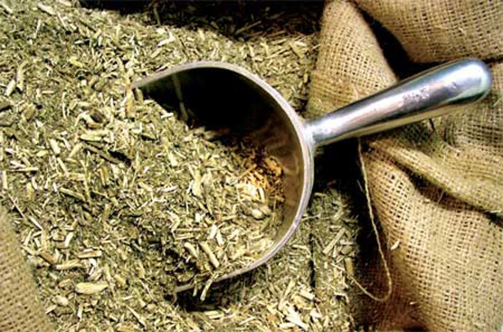
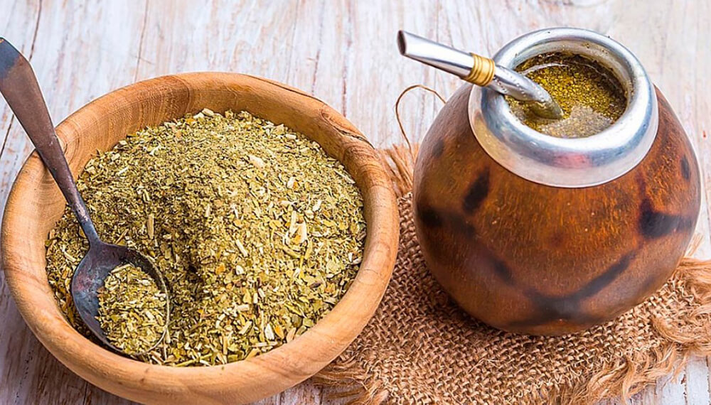

Conocé cómo se produce, de dónde viene y qué yerbas probar
Origen del mate
El mate es una infusión tradicional de Sudamérica que tiene sus raíces en la cultura de los pueblos guaraníes. Los guaraníes, quienes habitaban en la región del Río de la Plata (actual Argentina, Paraguay, Uruguay y el sur de Brasil), utilizaban las hojas de la planta yerba mate (Ilex paraguariensis) para preparar una bebida que consideraban sagrada. 